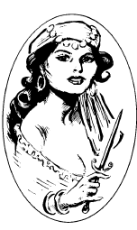

布朗温
布朗温（Bronwyn）
潜于黑暗者，混乱邪恶
力量： 12
敏捷： 14
体质： 11
智力： 16
灵知： 17
魅力： 13
防御等级： 8（10）
移动力： 12
等级/生命骰数：2
生命值：14
零级命中率：19
攻击次数：2
攻击/伤害：两把+2银制匕首（1d4+2/1d4+2）
特殊攻击：有毒武器（E型），预知
特殊防御：预知
魔法抗力：无
战斗：布朗温天生便具备预知能力，因此她永远不会遭到突袭，敌人的突袭检定遭到-2惩罚。并且，她永远不会在豁免检定中失败。
在近身战中，布朗温依赖一对细长的银刃匕首作战。这对匕首具备魔法，提供+2加值，并且刀刃上总是涂抹着E型毒素。（注入/立即/死亡/20）
当布朗温被迫离开维斯塔尼人的队伍时，她带走了许多不为人知的秘密知识，因此她仍具备着施展魔法的力量。她拥有二级潜修者的施法能力，与共通领域和预言领域建立了次要链接。她还可以如二级潜修者一样命令亡灵。
巢穴：布朗温与她麾下13名刺客组成的内环精英在一座古老的庄园里安家，这座庄园俯瞰着密西西比河，离新奥尔良约20英里。她选择此地定居的主要原因是建筑下方延伸的大量隧道网络。这些隧道最初建于南北战争期间，布朗温将这座建筑群扩张，并用邪恶的魔法和陷阱武装了它。
布朗温在她的宅邸或庄园的围墙内并没有特殊能力。尽管她住在庄园里，但这地方并不是她真正的巢穴。在地表下神秘的隧道群中，布朗温的邪恶力量得到了来自红死魔的增幅。
在这些黑暗的隧道中穿行的冒险者会发现，他们没有任何辨别方向的方法。指南针这样的科学产物，甚至是魔法，都只会将入侵者引向布朗温所期望的方向。
此外，布朗温还可以随意地将地下隧道内的所有非魔法光源熄灭。如果没有陷入走投无路的情况，她只会在自己所有属下都准备好在黑暗中作战时使用这种力量。无论有没有光线，布朗温都能在她的隧道内清楚的视物。
背景：虽然她看起来不超过30岁，但实际上布朗温已经快150岁了。即使是在寿命悠长的维斯塔尼人当中，她的美貌与长寿也令人惊叹。
布朗温在一个东欧的维斯塔尼旅团度过了人生的前五十年，她对旅团内最隐秘，最神圣的仪式产生了兴趣。当布朗温被勒令禁止接触这些秘密后，她就发誓，不惜一切代价也要达成自己的目的。在一个寂静无声的夜晚，布朗温潜入了旅团中最年长女性的马车中，窃走了许多记载着禁忌知识和神秘魔法的书籍。她的罪行最终被发现，布朗温也因此被逐出了维斯塔尼人的行列。
如今的布朗温已经步入了黑暗的行列，她在欧洲各地流浪了40年。这段时间里，她成立了一个名为"蝎子骑士团"的暗杀组织，其成员皆对布朗温个人效忠。尽管人们对于布朗温招募这些男女的手段知之甚少，但无疑，该组织的成员都拥有对布朗温的狂热忠诚和熟练的暗杀技艺。
最近，布朗温把老巢搬到了美国。她选择了新奥尔良附近一座俯瞰密西西比河的古老庄园作为落脚点。以这个毒蛇的老巢作为起点，她开始巩固这个错综复杂的暗杀组织。组织内的每个人都或多或少知道一些潜修者的技艺，但没有人清楚他们女主人最终的目的是什么。
